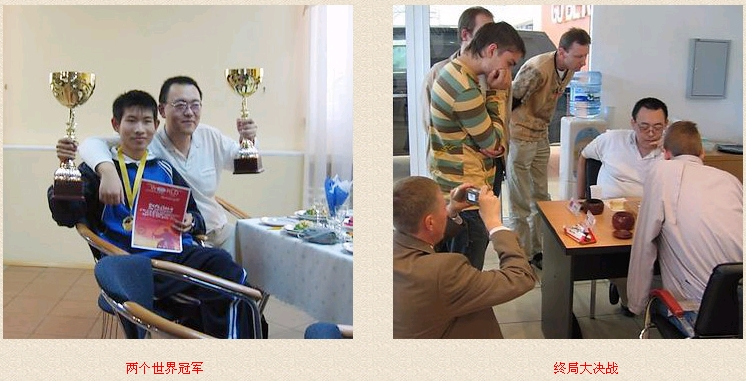
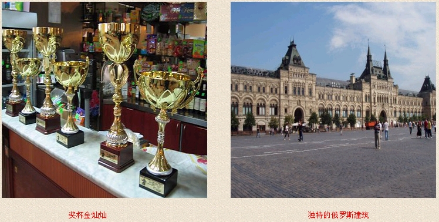
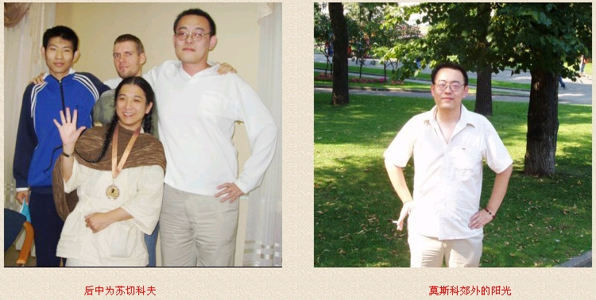
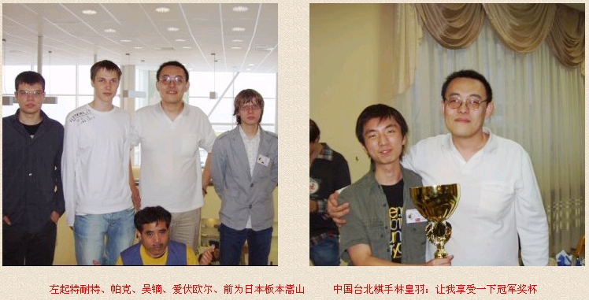
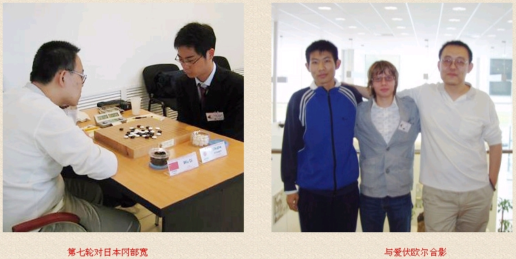
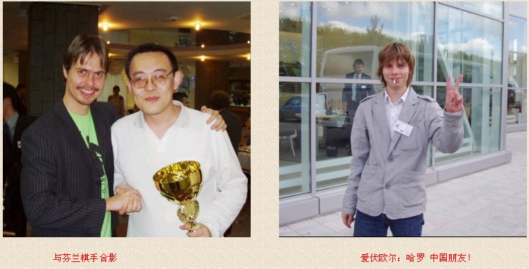

吴镝专访：我不想留下遗憾
#1 吴镝专访：我不想留下遗憾 作者：有志青年 发表时间：2007-8-21 11:48:27
本文原地址：http://www.rifchina.com/Article/ShowArticle.asp?ArticleID=4414
"本站获原作者直接授权转载，不得从本站再次转载"






8月8日，北京奥运倒计时一周年日，远在俄罗斯秋明市，第十届世界连珠个人锦标赛A组预选赛进行到最后一轮，两位自费参赛的中国棋手仇云飞和吴镝都面临背水一战，要拿下这盘棋才能出线参加接下来进行的A组比赛。
世界连珠锦标赛由国际连珠联盟举办，每两年一届。此次赛事共有来自10个国家的80位棋手参加了8个项目的比赛，A组代表着五子棋最高水平的角逐。我国曾在1999年举办过第六届连珠锦标赛，当时北京棋手张进宇七段凭借外卡直接参赛A组，并获第9名，这也是我国棋手唯一参加的一次A组赛事。
“我必须胜冈部宽才能出线。我对自己并没太担心，因为当时经过前几轮后觉得自己已经找到点状态了。”
“还有一点就是我们住的房间跟原先安排的不一样，每天要1700卢布，我身上的钱不足以支付全部B组的花费……打入A组的话，费用就由组委会全部承担，这也是我们两个人极大的动力。”
“仇云飞的对手是卡尔松，今年瑞典锦标赛的冠军。本来当时我并不为云飞担心，因为他状态不错。但他重感冒了，状态受到了影响。赛前卡尔松特意亲吻了自己的妻子和刚出生的孩子，然后就象即将奔赴战场的勇士一样。实战时，卡尔松的黑7明显让云飞准备不足，云飞在白8应对出了问题……云飞输掉了关键的这一盘，很可惜。”
“云飞被卡尔松档在了A组外，当时我的感觉就是自己又要一个人努力了，不过这也让我感觉很刺激。”
吴镝战胜冈部宽后，以预赛最后一名的成绩晋级A组，预赛的前5名汇同7名种子选手进行十一轮的单循环，决出本届世锦赛的冠军。
吴镝今年28岁，辽宁抚顺人。高中时开始接触五子棋，01年以后渐渐出成绩，多次在国内赛事中得到较好名次。这次世锦赛前，吴镝和数名中国棋手一道，通过国际连珠联盟中国事务部报名参赛。
但直到7月下旬，吴镝五段才收到书面邀请函，30日办完签证，然后与仇云飞五段一起，于8月4日飞赴莫斯科，转道秋明市参赛。
“这一波三折的过程的确有点类似92年顶替南斯拉夫参加欧锦赛的丹麦队。为了准备世界锦标赛，我放弃了今年上海名人邀请赛，并用了大半年时间来做研究，但实战刚开始时感觉状态并不好。”
“在A组赛刚开始时，我不是很适应比赛节奏，尤其比赛用时上跟国内不同，是每方2小时15分、每一步加30秒，面对这么长的时间，我明显还没有找到合理的时间使用方式。”
吴镝A组第一轮战胜了俄罗斯全国冠军康斯坦丁，第二轮负于爱沙尼亚的安德烈·帕克六段。第三轮吴镝与在预选赛中曾输过的俄罗斯美女棋手萨芙拉索娃·尤丽娅七段再度相遇，吴镝在实战中走出了让后方研究团一片哗然的白10手，此举被众人称之为“形同虚设的超弱手”，黑棋简单就杀了，此轮吴镝速败。三轮赛完仅得1分，一时显得很被动。
“输给帕克是输在了对于棋局变化的过于自信上。其实，实战我的走法和原来拆的并不一样。当时我忽然看到了一个新的走法，但效果并不好。而且这个白16在QT赛(A组预赛)上，我和云飞一人已经下过一次了，算策略上的失误吧，输得我很郁闷。”
“败给尤丽娅……其实第二盘她黑5就让我很不舒服，我在计算白6的时候就发现了白8，觉得黑并没有什么有力的拓展点，结果实战时她的黑9完全出乎我的意料……白10的选择是在我进行了80分钟思考后的放弃之举。因为我看不到一点可以坚持下去的机会，期待从对手计算上的失误中来寻求点机会吧。”
“可以说白10手是在苦思后，无法选择下的冲动之举吧……”
吴镝称自己的个性是很不服输的。他说，“作为棋手我认为自己具备了自信这种素质”、“我没有信奉的格言，我信我自己！”
输棋激发了吴镝的斗志，他即时地调整心态，接连在第四、五轮拿下日本的饭尾义弘，爱沙尼亚的爱伏·欧尔，稳住了阵脚，名次也从
#2 Re:吴镝专访：我不想留下遗憾 作者：黄药师 发表时间：2007-8-21 14:54:36
无禁，有禁都是中国人老大！#3 Re:Re:吴镝专访：我不想留下遗憾 作者：有志青年 发表时间：2007-8-21 16:31:26
引用：
原文由 黄药师 发表于 2007-8-21 14:54:36 :
无禁，有禁都是中国人老大！
这话说的到位！
#4 Re:吴镝专访：我不想留下遗憾 作者：不再冒险 发表时间：2007-8-22 11:28:03
好样的
尽自己的努力
不会有遗憾
#5 Re:吴镝专访：我不想留下遗憾 作者：友善 发表时间：2007-8-22 12:21:19
顶一下,中国人就是了不起!